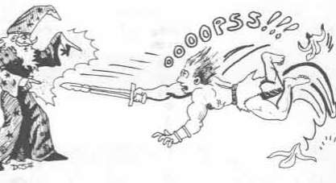
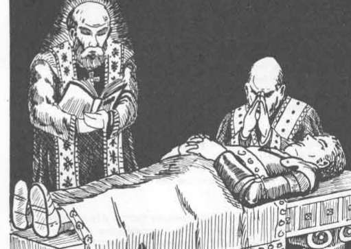
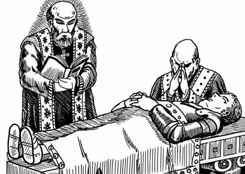
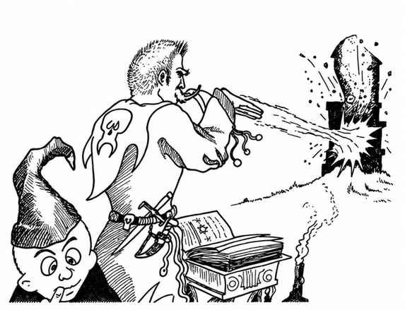

角色属性 · Character Abilities
每个角色都有六项主要特征，即角色的属性：力量、智力、感知、敏捷、体质和魅力。（另见附录 I“灵能能力”。）这些属性的范围为 3 至 18。游戏的前提是：每个玩家角色至少在某些方面高于平均水平，并拥有更优越的潜力。此外，角色若想生存，通常必须至少有两项属性达到 15 或以上，表现得出类拔萃。每项属性值由随机数字生成。裁判在《地下城主指南》中会得到几种建议方法；地下城主会告知你可用哪一种来决定角色属性。六项主要属性详述如下。
本目录下的子页面分别说明各项属性及其对应表格。




需要决定属性值时，可参阅《地下城主指南》的属性值生成规则。